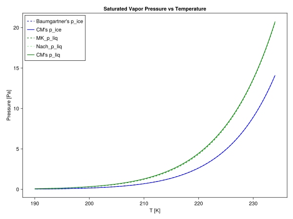
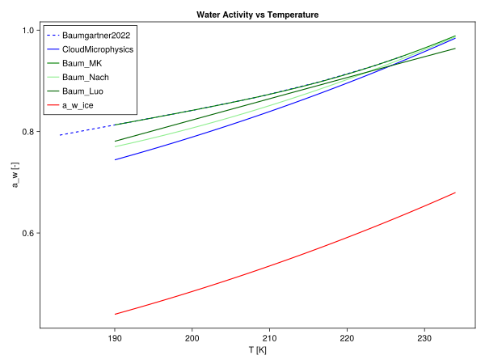
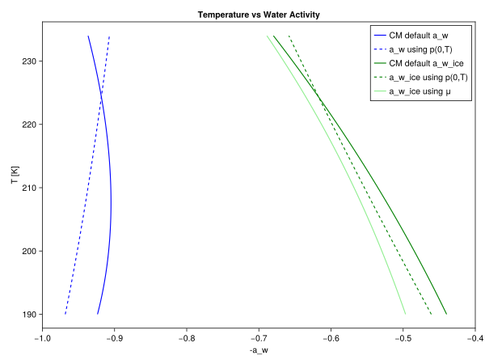

Water Activity
The Common.jl module includes a parameterization for difference in water activity between a H2SO4 solution droplet and ice. This can be used in immersion and homogeneous freezing parameterizations of nucleation rate coefficient, $J$. The parameterization is based on [33], [34], and [35].
and the water activity of ice at the same temperature, $a_{w,ice}(T)$. When the droplet is in equilibrium with its surroundings, $a_w$ is equivalent to relative humidity. Otherwise, a parameterization can be found in the Common.jl file and comes from [36],
\[\begin{equation} a_w = \frac{p_{sol}}{p_{sat}} \end{equation}\]
\[\begin{equation} a_{w,ice} = \frac{p_{i,sat}}{p_{sat}} \end{equation}\]
where $p_{sol}$ is saturated vapor pressure of water above solution, $p_{sat}$ is saturated vapor pressure above pure liquid water, and $p_{i,sat}$ is saturated vapor pressure above ice. $p_{sol}$ is determined in mbar using a parameterization for supercooled, binary $H_2SO_4/H_2O$ solution from [35] which is only valid for $185K < T < 235K$:
\[\begin{equation} ln(p_{sol}) = 23.306 - 5.3465x + 12xw_h - 8.19xw_h^2 + \frac{1}{T}(-5814 + 928.9x - 1876.7xw_h) \end{equation}\]
where $x$ is the weight fraction of sulphuric acid in the droplets (i.e. if droplets are 10% sulphuric acid by mass, $x = 0.1$), $w_h = 1.4408x$, and temperature is in Kelvins. Note that $x$ should vary as the size of the droplet changes.
There is a need to find a parameterization for p_{sol} at temperatures warmer than 235K for mixed phase clouds.
For now, the equation used to find water activity of a droplet at equilibrium at temperatures warmer than 235K is taken from [33] equation 4:
\[\begin{equation} a_w = S_i \frac{p_{i,sat}(T)}{p_{sat}(T)} \end{equation}\]
$S_i$ is water vapor saturation raito with respect to ice and defined by
\[\begin{equation} S_i = \frac{p_{v}}{p_{i,sat}(T)} \end{equation}\]
where $p_v$ is the ambient partial pressure of water vapor.
Only use the above parameterization for Si in the application that it is not available. i.e. for a parcel model, use the Si calculated in the parcel model.
$p_{sat}$ is currently defined using the Thermodynamics.jl library. An alternative is using the parameterization for $p_{sol}$ and setting x = 0. We choose to use the Thermodynamics.jl to keep saturated vapor pressure of pure water consistent throughout CloudMicrophysic.jl.
Similarly, $p_{i,sat}$ is defined through the Thermodynamics.jl library. It is possible to calculate it using chemical potential as done in [34], however, we will use the current parameterization for consistency since they give similar results.
To verify that our parameterizations for $p_{i,sat}$ and $p_{sat}$ from Thermodynamics.jl are valid at cold temperatures, we can compare to various other vapor pressure parameterizations as found in [33]. Here, $CM$ refers to CloudMicrophysics.jl and all dashed curves are different implementations of $p_{i,sat}$ and $p_{sat}$ ($p_{sat}$ labelled as $p_{liq}$ to emphasize ice vs liquid phase of the pure water).
include("plots/Baumgartner2022_fig5.jl")CairoMakie.Screen{SVG}

To verify that our parameterizations for water activty using Thermodynamics.jl is ok, we plot critical water activity (water activtiy at which freezing occurs) against the other variations found in [33]. Though not matching exactly, our parameterization is relatively close to the other parameterizations.  Shown in red is the water activity over ice using our parameterization. With these two lines plotted (critical water activity of the droplet and ice water activity), we create a phase diagram. Under the red line is liquid, above the critical water activity is ice, and between the two curves is supercooled liquid.
Another plot to test if our parameterization is reasonable is plotting against other parameterizations of water activity (as opposed to critical water activity) as a function of temperature. Plotted in green are various ways to compute water activity over ice. $using p(0,T)$ refers to how the denominator, $a_w$, is calculated. By default, this is parameterized assuming a pure liquid droplet with Thermodynamics.jl. $using p(0,T)$ implies that the parameterization of vapor pressure of a solution droplet is used but setting concentration of H2SO4 to zero. $using \mu$ refers to the parameterization used in [34] where water activity is dependent on chemical potential.
include("plots/T_vs_wateractivity.jl")CairoMakie.Screen{SVG}
 Taking the difference between any pair of blue and green lines will give a $\Delta a_w(T)$. Since all the blue lines are similar and all the green lines are similar, we can assume that our parameterization of pure liquid and ice water activities are reasonable.